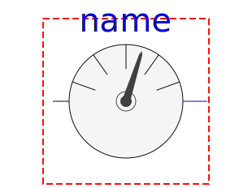
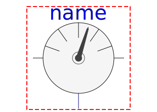

| Name |
Description |
 Rigid Rigid |
Base class for the rigid connection of two rotational 1D
flanges |
 Bearing Bearing |
Obsolete model. Use one of
Modelica.Mechanics.Rotational.Interfaces.PartialXXX instead |
|
TwoFlangesAndBearing |
Obsolete model. Use one of
Modelica.Mechanics.Rotational.Interfaces.PartialXXX instead |
|
TwoFlangesAndBearingH |
Obsolete model. Use one of
Modelica.Mechanics.Rotational.Interfaces.PartialXXX instead |
 PartialSpeedDependentTorque PartialSpeedDependentTorque |
Partial model of a torque acting at the flange (accelerates the
flange) |
|
 AbsoluteSensor |
Obsolete model. Use
Modelica.Mechanics.Rotational.Interfaces.PartialAbsoluteSensor
instead and define a meaningful name for the output signal |
|
 RelativeSensor |
Obsolete model. Use
Modelica.Mechanics.Rotational.Interfaces.PartialRelativbeSensor
instead and define a meaningful name for the output signal |